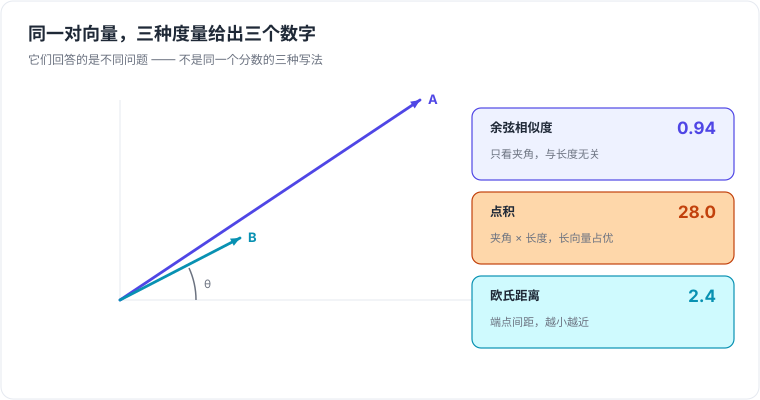
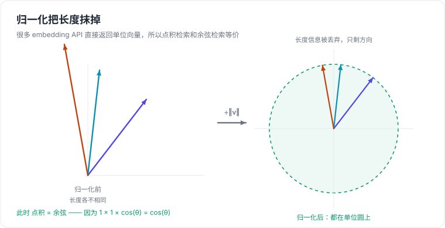
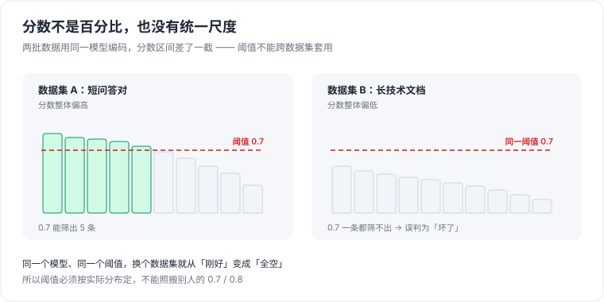

这是「写给工程师的机器学习入门」系列第 3 篇。 前两篇讲了「语义相似 = 向量方向接近」。这篇要拆开一个更具体的问题： 为什么检索接口返回的 0.83，不能理解成「83% 相关」？
结论先说
三句话：
- 余弦相似度看方向，不看长度，范围 [-1, 1]
- 点积是「方向 × 长度」，长度会影响结果，除非先归一化
- 欧氏距离看直线距离，越小越相似——方向相反的两个向量可能被算成"很近"
而"0.83 是不是 83%"这个问题，答案是：不是。分数只是一个排序依据，它的绝对数值取决于模型和数据集，没有统一含义。
一、三种度量，几何上完全不是一回事
先看一张图理解差别。

*图 1：同样两个向量，余弦看夹角（0.94），点积受长度影响（28），欧氏距离看端点间距（2.4）。*
| 度量 | 公式 | 看什么 | 越大越相似？ |
|---|---|---|---|
| 余弦相似度 | cos(θ) = (A·B) / (‖A‖·‖B‖) | 夹角 | 是 |
| 点积 | A·B = ‖A‖·‖B‖·cos(θ) | 夹角 + 长度 | 是 |
| 欧氏距离 | ‖A - B‖ | 端点直线距离 | 否，越小越近 |
注意欧氏距离那一列：它和余弦不是单调对应的。两个向量方向完全一致、只是一个长一个短，余弦会是 1.0，但欧氏距离可能很大。
这就解释了为什么用不同的向量库，同样的数据会给出不同的检索结果——它们默认用的度量不一样。
二、余弦相似度：只看角度
余弦相似度的定义很干净：
import numpy as np
def cosine(a, b):
return np.dot(a, b) / (np.linalg.norm(a) * np.linalg.norm(b))分子是点积，分母是两个向量的模长。所以长度被除掉了，只剩方向。
为什么这适合文本？因为文本长度不该影响语义判断：
- "天气不错" 和 "今天天气真不错啊" 意思一样，但后者更长
- 如果直接用点积，长的那句分数会更高——这不是我们想要的
余弦的取值：
1.0 → 方向完全一致
0.0 → 垂直（无关）
-1.0 → 方向完全相反但实践中，文本 embedding 的余弦值几乎不会是负数。 因为大部分模型输出的向量都落在同一个"象限"里，实际范围大概是 0.0 到 1.0。
这点很重要：如果你看到"余弦相似度理论范围 [-1,1]"，然后据此把阈值设成 0.5 觉得"过半数就算相关"，那是错的——真实分布完全是另一回事。
三、点积：方便，但会被长度带偏
点积是三个度量里计算最快的（就是乘加），所以很多系统直接用它。
但它的语义是「夹角 × 长度」：
a = np.array([1.0, 0.0]) # 短向量，指向右
b = np.array([1.0, 0.0]) # 同方向
c = np.array([10.0, 0.0]) # 同方向，长 10 倍
np.dot(a, b) # 1.0
np.dot(a, c) # 10.0 ← 方向完全一样，但分数高 10 倍a 和 c 的方向完全一致，余弦是 1.0，但点积差了 10 倍。如果拿点积排序，长向量会系统性地占优势。
除非先归一化。
四、归一化：把长度抹掉，让点积等于余弦
归一化就是把每个向量除以自己的长度，变成单位向量：
def normalize(v):
return v / np.linalg.norm(v)做完之后，所有向量的长度都是 1，于是：
A·B = ‖A‖·‖B‖·cos(θ) = 1 · 1 · cos(θ) = cos(θ)点积就等于余弦了。 这不是巧合，是设计出来的——很多系统（包括不少 embedding API）输出的向量本身就是归一化的，所以：
- 用点积和用余弦，结果完全一样
- 计算更快（省掉两次开方和除法）
- 可以用一些针对单位向量的优化索引（如内积索引）

*图 2：归一化把所有向量投影到单位圆上，长度信息被丢弃，只剩方向。*
所以有一个实用判断：
如果你的 embedding 已经归一化，那点积、余弦、内积检索是一回事。 如果没归一化，三者结果可能差很多。
怎么知道有没有归一化？算一下向量长度：
norm = np.linalg.norm(vec)
print(norm) # 接近 1.0 说明已归一化五、欧氏距离：最容易误用的那个
很多向量数据库（包括 chromadb 的部分配置）默认用 L2 距离：
dist = np.linalg.norm(a - b) # 越小越相似它和余弦的关系不固定：
| 情况 | 余弦 | 欧氏距离 |
|---|---|---|
| 同方向，长度不同 | 1.0（最相似） | 可能很大 |
| 同长度，方向略偏 | 0.98 | 小 |
| 方向相反，长度相同 | -1.0 | 中等 |
关键陷阱在这里：两个方向相反但都很长的向量，欧氏距离可能不大，但余弦是 -1（最不相似）。
如果检索结果明显"不太对但又说不出哪里不对"，先查一下向量库用的是哪个度量。这个在配置里通常叫 metric、distance 或 space，取值可能是 cosine / l2 / ip（内积）。
六、回到那个问题：0.83 是 83% 吗？
不是。原因是分数分布没有统一标准：

*图 3：同一个模型在不同数据集上，分数分布完全不同。阈值必须按实际分布定，不能套用固定数字。*
具体来说：
- 不同模型的分数尺度不同。模型 A 认为"相关"的分数是 0.8，模型 B 可能给出 0.6
- 不同数据集的分布不同。问答对之间的相似度普遍偏高（都是中文、都在问问题），长文档之间的相似度普遍偏低
- 同模型不同片段长度也不同。一句话和一段话的向量，相似度分数不在一个量级
所以正确做法是：先看分布，再定阈值。
scores = [s for _, s in vectorstore.similarity_search_with_score(query, k=50)]
import statistics
print("最高:", max(scores))
print("中位:", statistics.median(scores))
print("最低:", min(scores))如果最高分 0.45、中位 0.32，那阈值设 0.7 就等于永远检索不到东西——这不是阈值的问题，是链路前面某处出错了（这个坑在上一篇 RAG 排错里讲过）。
如果最高分 0.82、中位 0.41，那 0.7 可能刚好能筛出真正相关的几条。
七、四个实用建议
1. 同一个知识库里只用一种度量
混用会让分数不可比。换度量等于换打分标准，历史数据、阈值、评测基线全部失效。
2. 阈值按数据定，不按直觉定
标一批"相关 / 不相关"的样本，看两组分数的分布重叠在哪，阈值就设在那。通常是个区间而不是一个点。
3. 相对排序比绝对分数可靠
检索取 top-k 时，排序是稳定的；但"分数 0.75 以上算相关"这种绝对判断，换个模型就崩。要卡质量就卡排序后的截断位置，别卡分数。
4. 换 embedding 模型 = 所有阈值作废
不只是维度要重建（第 1 篇讲过），分数的尺度也变了。原来的 0.7 在新模型上可能对应完全不同的含义。
本篇小结
- 余弦看方向、点积看方向×长度、欧氏距离看端点距离，三者不单调等价
- 归一化之后，点积 = 余弦
- 分数不是百分比，它只在同一个模型 + 同一个数据集内部可比
下一篇预告
《从 RAG 看一个完整的机器学习系统》
下一篇把前三篇的零件拼起来：为什么 RAG 的每一个环节都能单独失败，以及怎么设计一个"出问题能被发现"的检索系统。
---
关于作者
本文是「写给工程师的机器学习入门」系列第 3 篇。作者 PHclaw 在做 AgentFlow——一个自托管 AI Agent 平台，知识库检索默认走 chromadb，embedding 端点可指向本地 Ollama。
- 源码：https://github.com/PHclaw/agentflow
- 在线演示：http://159.75.21.251:3000
- 文档：https://phclaw.github.io/agentflow/
- 全部文章：https://phclaw.github.io/blog/
对相似度度量有疑问，欢迎在 Discussions 里讨论。